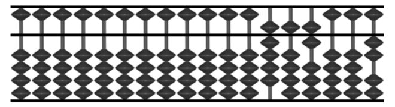
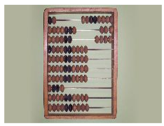

W jaki sposób ludzie pierwotni rozróżniali liczby jeśli chodzi o ilość?
ODP: 1,2,dużo
Andrzej wysiadł z autobusu PKS na przystanku w Dąbrówce. Wysiadając, nie dotykał drzwi, mimo że pozostali wysiadający pasażerowie musieli ich dotknąć przy wysiadaniu. Pytania:
Ilu pasażerów wysiadło z autobusu w Dąbrówce?
Jako który z kolei wysiadał Andrzej?
Czy drzwi w autobusie były otwierane ręcznie czy automatycznie?
Wysiadało trzech pasażerów, Andrzej musiał być tym środkowym ponieważ drzwi były otwierane ręcznie
Uzupełnijcie puste miejsca znakami +,-,* lub / tak by równanie było poprawne(7 _ 9) _ 15 _ 3 = 237
7 + 9 = 16
15 x 16 = 240
240 - 3 = 237
Znajdźcie następną liczbę:
3 3 6 9 15 …
Odp. 24 (ciąg Fibonacciego pomnożony przez 3)
Wymieńcie magiczne znaczenie liczb: 3, 111
3 - boska trójka 111 - pechowa liczba w krykieta
Na pastwisko wyruszyło stado krów. Jedna z nich idzie na przodzie przed dwiema, jedna za dwiema i jedna pomiędzy dwiema.
Jaka jest najmniejsza możliwa ilość krów w tym stadzie?
3 krowy
Wstawcie podane cyfry w odpowiednie miejsca równania by stało się ono poprawne
25 8 3 10 75
(_ + _) * (_ + _) + _ = 579
3 + 25 = 28
8 + 10 = 18
18 x 28 = 504
75 + 504 = 579
Znajdźcie następną liczbę
63 57 63 60 63 60 63 …
ODP: 63 liczba dni w miesiącu *2 +1 (31*2+1 28*2+1 31*2+1 30*2)
Do ilu możemy policzyć używając za pomocą palców dwóch dłoni?
60
Co to za zwierzę, które rano chodzi na czterech nogach, w południe na dwóch, a wieczorem na trzech?
człowiek
Uzupełnijcie puste miejsca znakami +,-,* lub / tak by równanie było poprawne5 _ 50 _ 2 _ (4 _ 9) = 487
5 x 50 = 250
2 x 250 = 500
9 + 4 = 13
500 - 13 = 487
Znajdźcie następną liczbę
4 9 25 49 121…
ODP: 169 liczby pierwsze do kwadratu

Jak nazywa się liczydło ze zdjęcia, i jaka liczba jest obecnie na nim ustawiona?
Odp. Soroban, 956002

Na zdjęciu przedstawiono liczydło. Podaj jego nazwę oraz podaj co symbolizuje trzeci rząd od dołu.
Rząd z 4 koralikami jest po to, żeby zaznaczyć na liczydle części ułamkowe. Rząd z 4 koralami oznacza 1/4. Rzędy poniżej oznaczają odpowiednio części dziesiętne oraz setne.
Używając udostępnionych kalkuli zapisać liczbę 763 w sumeryjskim systemie liczbowym
Odp. 1 x walec z dziurą, 3 x walec, 4 x małe kule, 3 x małe walce
Niektóre miesiące mają 30 dni, inne 31. Ja wiele miesięcy ma 28 dni?
Odp. wszystkie
Pewien człowiek wstając rano zobaczył za oknem wschód słońca, z tej okazji wybrał się na spacer. Wyszedł z domu, szedł 3 km. na południe, 3 km. na wschód, 3 km. na północ i znalazł się dokładnie w tym samym miejscu skąd wyruszał.
Jaki to był miesiąc? Gdzie mieszka ów człowiek?
Odp. Był to marzec, dokładnie 20 lub 21, przesilenie wiosenne. Mieszkał na biegunie północnym
Zakładając że dysponujemy ołówkiem (można sobie wyobrazić), dorysować coś do poniższego rysunku (bez odrywania ołówka!) by wyszło nam sześć
Odp. SIX
Wypełnijcie równanie podanymi liczbami oraz znakami +, -, *, oraz / tak by równanie było prawdziwe
50 8 5 4
_ _ _ _ _ _ _ = 500
5 x 50 = 250
8 / 4 = 2
250 x 2 = 500
Wypełnijcie równanie podanymi liczbami oraz znakami +, -, *, oraz / tak by równanie było prawdziwe
3 8 7
_ _ _ _ _ = 792
75 / 3 = 25
25 + 7 = 32
32 x 25 = 800
800 - 8 = 792
Wypełnijcie równanie podanymi liczbami oraz znakami +, -, *, oraz / tak by równanie było prawdziwe
50 8 5 4 25 3 1 6
_ _ _ _ _ _ _ _ _ _ _ _ _ _ _ = 1937
6 + 4 = 10,
5 + 25 = 30, 8 + 1 = 9
50 + 9 = 59, 30 + 3 = 33,
33 x 59 = 1947, 1947 - 10 = 1937
Jaka liczba nastąpi na 100-nym miejscu następującego ciągu: 1,2,2,3,3,3,4,4,4,4...?
ODP: 14
Znajdź następną liczbę
0, 1, 5, 23, 119…
ODP: 719 (1!-1, 2!-1, 3!-1) …
Znajdź następną liczbę
1, 3, 4, 7, 6 12, 8, 15, 13, 18, 12, 28
Odp. 14, suma dzielników kolejnych liczb naturalnych
{kind=link}
{kind=link}